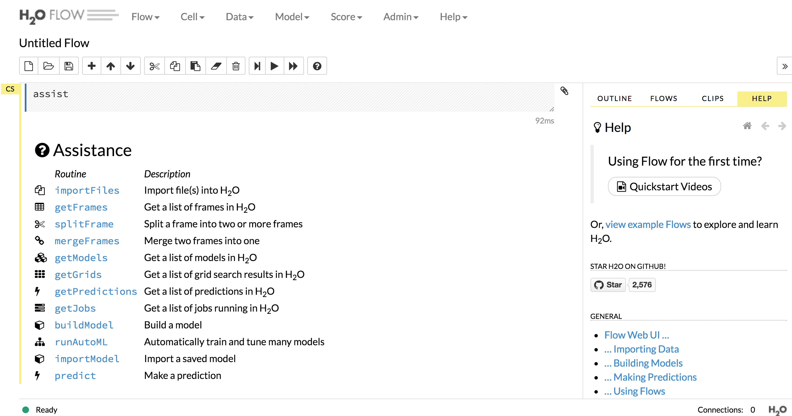
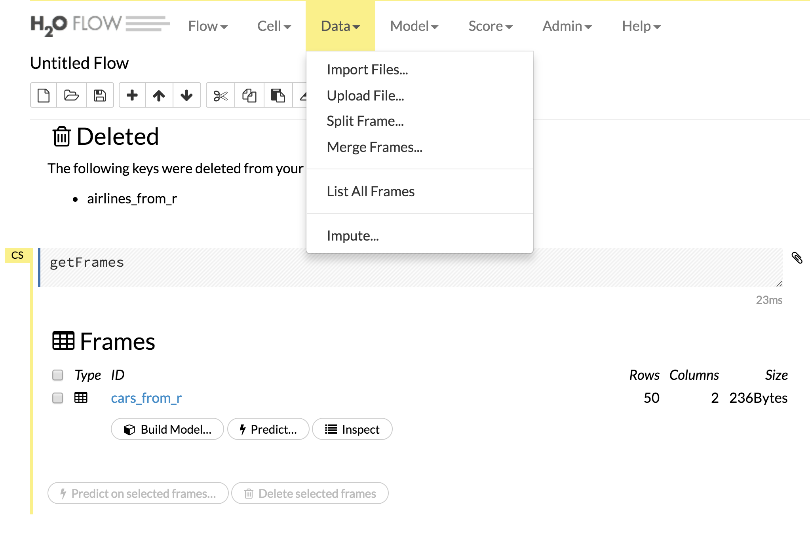

Chapter 6 Big data
6.1 How to deal with (very / too) large datasets?
- Use more RAM / processors / drive space…
- Use less data: (re)sample, …
- Use a database
- Use specific R packages (
ff,bigmemory) - Use other tools
6.2 How big is big?
- Fits in RAM and on drive (but slow)
- Doesn’t fit in RAM but fits on drive
- Doesn’t fit in RAM and doesn’t fit on drive
6.3 List of tools
Reading: Varian (2014) (PDF available)

Spark? h2o? More? Let’s go back to the bottlenecks
- CPU
- RAM
- I/O
6.4 Data that fits in memory
6.4.1 Faster I/O
Reading: https://cran.r-project.org/web/packages/data.table/vignettes/datatable-intro.html
data.table provides an enhanced of a data.frame and faster I/O with fread and fwrite.
To read the 0.5GB ratings file from MovieLens
library(data.table)
system.time(ratings <- fread("~/Dropbox/Data17/ml-20m/ratings.csv"))takes
Read 20000263 rows and 4 (of 4) columns from 0.497 GB file in 00:00:05
user system elapsed
4.007 0.229 4.244while
system.time(ratings <- read.csv("~/Dropbox/Data17/ml-20m/ratings.csv"))takes
user system elapsed
85.199 2.711 90.997 There are ways to improve the speed of read.csv (for example, but specifying column types). But in general fread is much faster.
library(readr) # in tidyverse
system.time(ratings <- read_csv("~/Dropbox/Data17/ml-20m/ratings.csv")) user system elapsed
10.290 3.037 18.450 also tends to perform better than read.csv.
| package | function. | speed | output |
|---|---|---|---|
| base | read.csv | slow | data.frame |
| data.table | fread | very fast | data.table |
| readr | read_csv | fast | tibble |
6.4.2 Reference vs copy
Reading: http://adv-r.had.co.nz/memory.html Reading: https://jangorecki.gitlab.io/data.table/library/data.table/html/assign.html
library(pryr)
library(data.table)
d <- read.csv("~/Dropbox/Data17/ml-latest-small/ratings.csv")
D <- fread("~/Dropbox/Data17/ml-latest-small/ratings.csv")
object_size(d)
object_size(D)
mem_change(d$Idx <- 1:nrow(d))
mem_change(D[, Idx:= 1:.N])
object_size(d$Idx)
object_size(D$Idx)d <- read.csv("~/Dropbox/Data17/ml-latest-small/ratings.csv")
D <- fread("~/Dropbox/Data17/ml-latest-small/ratings.csv")
.Internal(inspect(d))
d$Idx <- 1:nrow(d)
.Internal(inspect(d))
.Internal(inspect(D))
D[, Idx:= 1:.N]
.Internal(inspect(D))6.4.3 data.table: another data manipulation grammar
Reading: https://cran.r-project.org/web/packages/data.table/vignettes/datatable-intro.html
6.5 Data that doesn’t fit in memory (but fits on drive)
Let’s try to work with a 12GB file and 4/8 GB of memory…
6.6 Pure R solutions
6.6.1 A regressions example
library(data.table)
airlines <- fread("/Users/cchoirat/Dropbox/Data17/AirFlights/allyears2k.csv")
rfit <- lm(ArrDelay ~ Distance, data = airlines)
summary(rfit)6.6.2 Sampling
- Read the data (even line by line)
- Select a sample of rows
- Run your model on the random sample
6.6.3 bigmemory
https://cran.r-project.org/web/packages/bigmemory/index.html
Reading: https://cran.r-project.org/web/packages/bigmemory/vignettes/Overview.pdf
bigmemory: Manage Massive Matrices with Shared Memory and Memory-Mapped Files
Create, store, access, and manipulate massive matrices. Matrices are allocated to shared memory and may use memory-mapped files. Packages ‘biganalytics’, ‘bigtabulate’, ‘synchronicity’, and ‘bigalgebra’ provide advanced functionality.
(+) pure R solution from a user perspective
(-) mostly for numeric data matrices, mostly to speed up computations on data of +/- RAM size
library(bigmemory)
library(biganalytics)
# library(bigtabulate)
# library(biglm)
flights <- read.big.matrix(
"/Users/cchoirat/Dropbox/Data17/AirFlights/allyears2k.csv",
header = TRUE,
backingfile = "allyears2k.bin",
backingpath = "/Users/cchoirat/Dropbox/Data17/AirFlights/",
descriptorfile = "allyears2k.desc",
shared = TRUE)
air_flights <- attach.big.matrix("/Users/cchoirat/Dropbox/Data17/AirFlights/allyears2k.desc")
dim(air_flights)
colnames(air_flights)
mean(air_flights[, "ArrDelay"], na.rm = TRUE)
fit <- biglm.big.matrix(ArrDelay ~ Distance, data = air_flights)
fit
summary(fit)6.6.4 Database connections and lazy evaluation
library(data.table)
D <- fread("~/Dropbox/Data17/ml-20m/ratings.csv")
library(sqldf)
read.csv.sql(file = "~/Dropbox/Data17/ml-20m/ratings.csv",
sql = c("ATTACH 'ratings.sqlite3' AS NEW"))
read.csv.sql(file = "~/Dropbox/Data17/ml-20m/ratings.csv",
sql = "CREATE TABLE ratings_table AS SELECT * FROM file",
dbname = "ratings.sqlite3")
library(dplyr)
library(DBI)
con <- DBI::dbConnect(RSQLite::SQLite(), dbname = "ratings.sqlite3")
ratings_db <- tbl(con, "ratings_table")
ratings_db %>%
select(ends_with("Id")) %>%
filter(movieId < 100)# Source: lazy query [?? x 2]
# Database: sqlite 3.19.3
# [/Users/cchoirat/Documents/LocalGit/bigdata17/ratings.sqlite3]
userId movieId
<int> <int>
1 1 2
2 1 29
3 1 32
4 1 47
5 1 50
6 2 3
7 2 62
8 2 70
9 3 1
10 3 24
# ... with more rows
# ... with more rowsratings_db %>%
select(ends_with("Id")) %>%
filter(movieId < 100) %>%
collect()# A tibble: 790,226 x 2
userId movieId
<int> <int>
1 1 2
2 1 29
3 1 32
4 1 47
5 1 50
6 2 3
7 2 62
8 2 70
9 3 1
10 3 24
# ... with 790,216 more rows6.7 Scaling up
6.8 Parallel computing and clusters
6.9 Cloud computing
More soon with the Odyssey guest lecture (https://www.rc.fas.harvard.edu/odyssey/).
6.10 h2o: “Fast Scalable Machine Learning”
http://www.r-bloggers.com/scalable-machine-learning-for-big-data-using-r-and-h2o/
http://venturebeat.com/2014/11/07/h2o-funding/ https://www.h2o.ai/driverless-ai/ https://www.infoworld.com/article/3236048/machine-learning/review-h2oai-automates-machine-learning.html
6.10.1 Ecosystem
Readings:
To build H2O or run H2O tests, the 64-bit JDK is required.
To run the H2O binary using either the command line, R, or Python packages, only 64-bit JRE is required.
if ("package:h2o" %in% search()) { detach("package:h2o", unload=TRUE) }
if ("h2o" %in% rownames(installed.packages())) { remove.packages("h2o") }
install.packages("h2o")6.11 Running h20 locally within R
library(h2o)
localH2O <- h2o.init(min_mem_size = "20g")# h2o.init(ip = "localhost", port = 54321, startH2O = TRUE,
# forceDL = FALSE, enable_assertions = TRUE, license = NULL,
# nthreads = -2, max_mem_size = NULL, min_mem_size = NULL,
# ice_root = tempdir(), strict_version_check = TRUE,
# proxy = NA_character_, https = FALSE, insecure = FALSE,
# username = NA_character_, password = NA_character_) Connection successful!
R is connected to the H2O cluster:
H2O cluster uptime: 19 days 12 hours
H2O cluster version: 3.14.0.3
H2O cluster version age: 1 month and 24 days
H2O cluster name: H2O_started_from_R_cchoirat_bgt310
H2O cluster total nodes: 1
H2O cluster total memory: 15.18 GB
H2O cluster total cores: 8
H2O cluster allowed cores: 8
H2O cluster healthy: TRUE
H2O Connection ip: localhost
H2O Connection port: 54321
H2O Connection proxy: NA
H2O Internal Security: FALSE
H2O API Extensions: XGBoost, Algos, AutoML, Core V3, Core V4
R Version: R version 3.4.2 (2017-09-28) 6.12 JVM (from Wikipedia)
A Java virtual machine (JVM) is an abstract computing machine that enables a computer to run a Java program. There are three notions of the JVM: specification, implementation, and instance. The specification is a document that formally describes what is required of a JVM implementation.
6.13 Which languages? (from Wikipedia)
This list of JVM Languages comprises notable computer programming languages that are used to produce software that runs on the Java Virtual Machine (JVM). Some of these languages are interpreted by a Java program, and some are compiled to Java bytecode and JIT-compiled during execution as regular Java programs to improve performance.
6.14 Which languages?
https://en.wikipedia.org/wiki/List_of_JVM_languages
- Java
- Scala, an object-oriented and functional programming language
- Jython
- R (an implementation of R: https://en.wikipedia.org/wiki/Renjin)
- …
6.15 State of the h2o JVM
h2o.clusterInfo()R is connected to the H2O cluster:
H2O cluster uptime: 19 days 13 hours
H2O cluster version: 3.14.0.3
H2O cluster version age: 1 month and 24 days
H2O cluster name: H2O_started_from_R_cchoirat_bgt310
H2O cluster total nodes: 1
H2O cluster total memory: 15.18 GB
H2O cluster total cores: 8
H2O cluster allowed cores: 8
H2O cluster healthy: TRUE
H2O Connection ip: localhost
H2O Connection port: 54321
H2O Connection proxy: NA
H2O Internal Security: FALSE
H2O API Extensions: XGBoost, Algos, AutoML, Core V3, Core V4
R Version: R version 3.4.2 (2017-09-28) Let’s check http://localhost:54321/flow/index.html.

6.15.1 Importing data into h2o from the R session
data(cars)
cars_to_h2o <- as.h2o(cars, destination_frame = "cars_from_r")
is.data.frame(cars_to_h2o) # FALSE
class(cars_to_h2o) # H2OFrame(No persistence beyond the R session when h2O is started from R.)
6.15.2 h2o functions
summary(cars_to_h2o) # actually calls h2o:::summary.H2OFrame(cars_to_h2o)Approximated quantiles computed! If you are interested in exact quantiles, please pass the `exact_quantiles=TRUE` parameter. speed dist
Min. : 4.0 Min. : 2.00
1st Qu.:12.0 1st Qu.: 26.00
Median :15.0 Median : 36.00
Mean :15.4 Mean : 42.98
3rd Qu.:19.0 3rd Qu.: 56.00
Max. :25.0 Max. :120.00 6.15.3 Let’s check from the h2o JVM
From the browser: ‘Data’ -> ‘List All Frames’

6.15.4 Importing data into h2o from disk
airlines_path <- "/Users/cchoirat/Dropbox/Data17/AirFlights/allyears2k.csv" # full path
airlines_to_h2o <- h2o.importFile(path = airlines_path,
destination_frame = "airlines_from_r")
summary(airlines_to_h2o)6.15.5 Running a statistical model
h2ofit <- h2o.glm(y = "ArrDelay", x = "Distance",
training_frame = airlines_to_h2o,
intercept = TRUE, # default is TRUE
family = "gaussian")
h2ofit
summary(h2ofit)Coefficients: glm coefficients
names coefficients standardized_coefficients
1 Intercept 7.702657 9.308665
2 Distance 0.002199 1.272253airlines <- read.csv("~/Dropbox/Data17/AirFlights/allyears2k.csv")
rfit <- lm(ArrDelay ~ Distance, data = airlines)
summary(rfit)Coefficients:
Estimate Std. Error t value Pr(>|t|)
(Intercept) 7.7011553 0.2326198 33.106 <2e-16 ***
Distance 0.0022045 0.0002487 8.865 <2e-16 ***6.15.6 h2o models

6.15.7 Closing the h2o session
h2o.shutdown()6.15.8 Available algorithms
- Deep learning
- Distributed randon forest
- Gradient boosting method
- Generalized linear modeling
- Generalized low rank modeling
- K-means
- Naive Bayes
- Principal component analysis
6.15.9 How to incorporate new models in h2o?
(+) built-in models behave very much like R and are scalable
(-) not easy to extend (e.g., GLM https://github.com/h2oai/h2o-3/blob/master/h2o-algos/src/main/java/hex/glm/GLM.java)
allyears.csv.
6.16 Spark
Reading: https://spark.rstudio.com/
library(sparklyr)
spark_install(version = "2.1.0")conf <- spark_config()
conf$`sparklyr.shell.driver-memory` <- "32G"
conf$spark.memory.fraction <- 0.5
sc <- spark_connect(master = "local")library(dplyr)
iris_tbl <- copy_to(sc, iris)
flights_tbl <- copy_to(sc, nycflights13::flights, "flights")
batting_tbl <- copy_to(sc, Lahman::Batting, "batting")
src_tbls(sc)[1] "batting" "flights" "iris"You can use SQL:
library(DBI)
iris_preview <- dbGetQuery(sc, "SELECT * FROM iris LIMIT 10")Like h2o, you can open a web interface:
spark_web(sc)top_rows <- read.csv("~/Dropbox/Data17/AirFlights/allyears.csv", nrows = 5)
file_columns <- top_rows %>%
purrr::map(function(x)"character")
rm(top_rows)sp_flights <- spark_read_csv(sc,
name = "flights2",
path = "~/Dropbox/Data17/AirFlights/allyears.csv",
memory = FALSE,
columns = file_columns,
infer_schema = FALSE)# Source: table<flights2> [?? x 31]
# Database: spark_connection
Year Month DayofMonth DayOfWeek DepTime CRSDepTime ArrTime CRSArrTime UniqueCarrier
<chr> <chr> <chr> <chr> <chr> <chr> <chr> <chr> <chr>
1 1987 10 14 3 741 730 912 849 PS
2 1987 10 15 4 729 730 903 849 PS
3 1987 10 17 6 741 730 918 849 PS
4 1987 10 18 7 729 730 847 849 PS
5 1987 10 19 1 749 730 922 849 PS
6 1987 10 21 3 728 730 848 849 PS
7 1987 10 22 4 728 730 852 849 PS
8 1987 10 23 5 731 730 902 849 PS
9 1987 10 24 6 744 730 908 849 PS
10 1987 10 25 7 729 730 851 849 PS
# ... with more rows, and 22 more variables: FlightNum <chr>, TailNum <chr>,
# ActualElapsedTime <chr>, CRSElapsedTime <chr>, AirTime <chr>, ArrDelay <chr>,
# DepDelay <chr>, Origin <chr>, Dest <chr>, Distance <chr>, TaxiIn <chr>,
# TaxiOut <chr>, Cancelled <chr>, CancellationCode <chr>, Diverted <chr>,
# CarrierDelay <chr>, WeatherDelay <chr>, NASDelay <chr>, SecurityDelay <chr>,
# LateAircraftDelay <chr>, IsArrDelayed <chr>, IsDepDelayed <chr>flights_table <- sp_flights %>%
mutate(DepDelay = as.numeric(DepDelay),
ArrDelay = as.numeric(ArrDelay),
Distance = as.numeric(Distance),
SchedDeparture = as.numeric(CRSDepTime)) %>%
select(Origin, Dest, SchedDeparture, ArrDelay, DepDelay, Month, DayofMonth, Distance)
flights_table %>% headCache data:
sp_flights %>%
tally # takes a looooong time123534969…
# might take a while...
subset_table <- flights_table %>%
compute("flights_subset")subset_table %>%
tally # a bit faster.123534969 as well!
6.16.1 Run a statistical model
# small_flights <- spark_read_csv(sc,
# name = "flights2",
# path = "~/Dropbox/Data17/AirFlights/allyears2k.csv",
# memory = FALSE,
# columns = file_columns,
# infer_schema = FALSE)# small_flights_table <- small_flights %>%
# mutate(DepDelay = as.numeric(DepDelay),
# ArrDelay = as.numeric(ArrDelay),
# Distance = as.numeric(Distance),
# SchedDeparture = as.numeric(CRSDepTime)) %>%
# select(Origin, Dest, SchedDeparture, ArrDelay, DepDelay, Month, DayofMonth, Distance)
#
# small_flights_table %>% head# lm(arr_delay ~ distance, data = flights_tbl)
ml_linear_regression(flights_table, response = "ArrDelay", features = "Distance")Coefficients:
(Intercept) Distance
6.9707048955 0.0001100521
6.16.2 Deployment
6.17 Sparkling Water
Reading: https://spark.rstudio.com/h2o.html
6.18 Adding new models to h2o and spark
6.19 More?
GPU
References
Varian, H.R. 2014. “Big Data: New Tricks for Econometrics.” Journal of Economic Perspectives 28 (2): 3–28. doi:10.1257/jep.28.2.3.